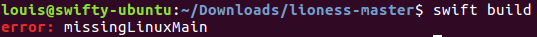
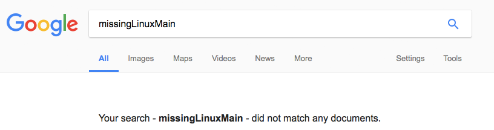

Recently I upgraded my open source projects, including Lioness, to Swift 4.
What's somewhat special about Lioness is that it supports Linux. Which gave me a rather strange error when upgrading it to Swift 4: missingLinuxMain.

(The swift build command is ran by Travis-CI on each commit to make sure Lioness still compiles as a Swift package on Linux.)
The weird thing is that the swift build command worked fine with Swift 3. As I'm sure most developers would do, the first thing I tried is to Google this error. But that gave me the following disappointing result:

Appearantly no-one had ever put anything about this error on the internet. So I decided I would, with the blog post you're reading as a result.
The solution
Starting with Swift 4, it is expected that you have a LinuxMain.swift file in the Tests folder of your Swift package. This file is intended to include the unit tests you want to run on Linux for your Swift package. I didn't run the unit tests of Lioness on Linux at the time of writing, which is why I never bothered adding it. To be clear: the LinuxMain.swift file may be empty, but it's required to exist if you want the Swift Package Manager commands to work.
If you would like to get notified about new posts, you can:
- Follow @SilverFoxBE on Twitter
- Subscribe to the RSS feed